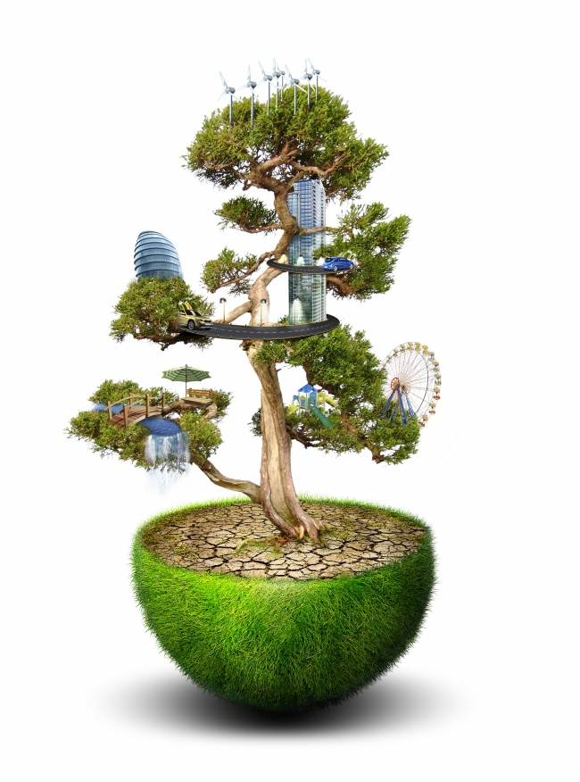

绿色环保
保护环境
新中国成立60年来，特别是改革开放以来，在党和政府的高度重视下，我国的环境保护事业从无到有，从小到大，发展迅速。经过不懈努力，环境法制建设进一步完善，环境污染治理力度逐步加大，生态环境保护建设得到加强，污染治理投入稳步增加，全国环境质量严重恶化的趋势基本得到了控制，环境保护事业快速发展。
储存“绿色资本”

人们为了安坦地生活，会储粮存钱；企业为了顺利开展生产，会储存资金和资源；人类为了维护生态安全，则要储存“绿色资本”。 因为绿色既是生命与健康的象征，也是文明与环保的标志，更是我们赖以生存的环境基色。如果没有了绿色，就会威胁到我们人类的生存与发展，地球也将面临物种灭绝。所以，携手共存“绿色资本”，已成为世界各国应对生态危机的共识和责任。
储存“绿色资本”，就是植树护绿，扩展绿化。要储存更多的“绿色资本”，最有效的直接方法就是植树造林。植树造林，不仅能美化生活环境，预防水土流失，而且还能更有效地减少地球臭氧层的二氧化碳，为人类提供清洁、新鲜的空气，改善生态环境和调节气候。人类已意识到了储存“绿色资本“的重要性。世界上很多国家为此设立了植树节，通过植树护绿等活动，增强人们的环保和绿化意识，促进人们植树护绿的激情，以此达到储存“绿色资本”、保持生态平衡的目的。
绿色环保小常识
随着科技的进步，人们的生活水平有很大提高，但是污染也随之而来，低碳、环保也越来越引起人们的重视，这里分享一些我们每个人在生活中力所能及的一些绿色环保小知识。
- 节约用水
- 少用洗洁精
- 节约用电
- 交通工具
- 选购绿色食品
- 选无磷洗衣粉
- 用充电电池
- 自带菜篮买菜
- 保护野生动物
- 利用好可回收物品
- 领养一棵树